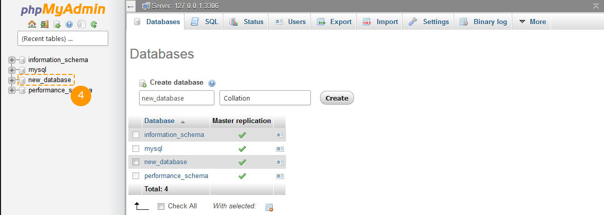
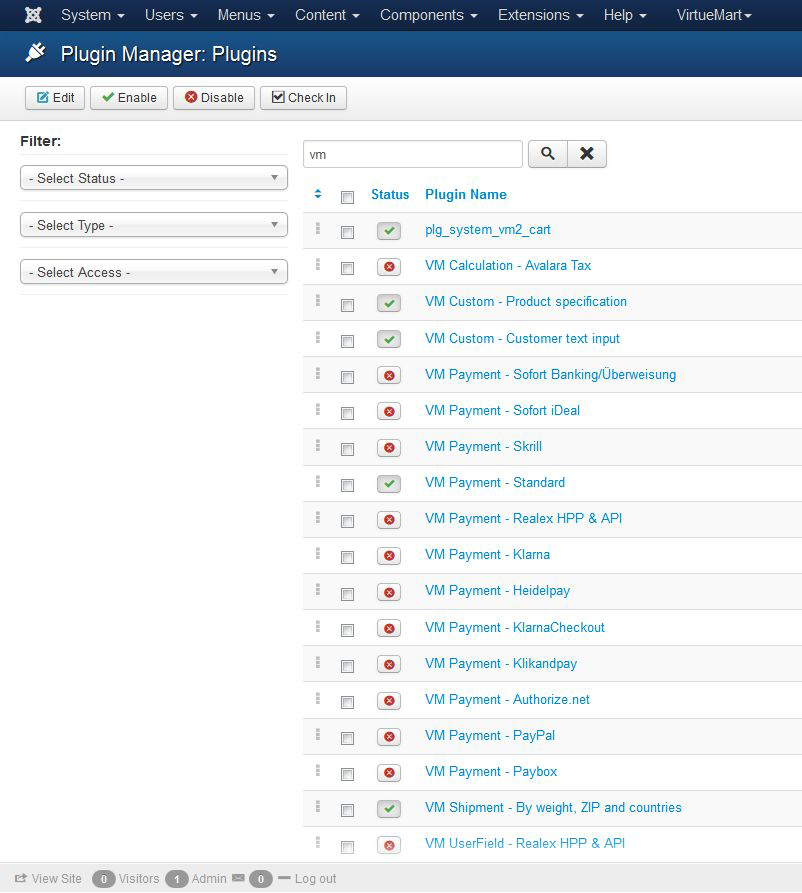
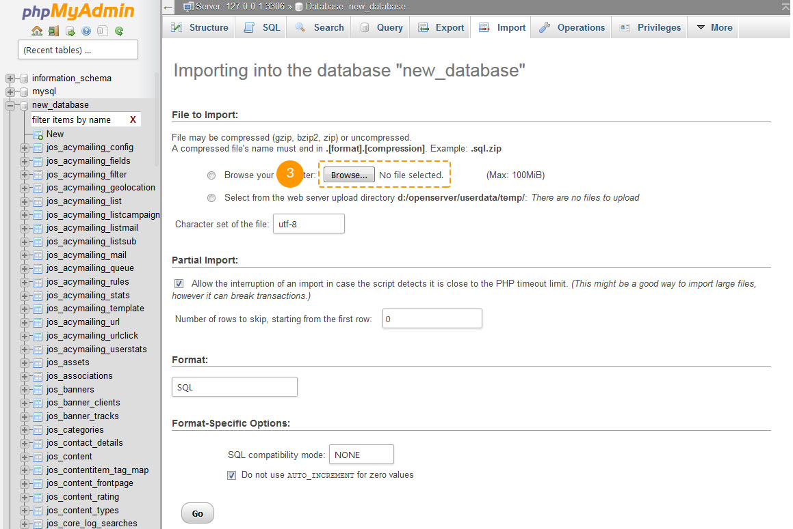

Introduction What can be found in this package and what it can be used for
Thank you for purchasing Joomla template. This documentation consist of several parts and shows you the entire process how to setup and administers Joomla Web site from scratch. We did our best to make this manual as clear and easy to follow as possible.
What is Joomla CMS?
Joomla CMS is an open source solution for building rich content Web sites. It enables you to build Web sites and powerful on-line applications and requires almost no technical skills or knowledge to manage. Many aspects, including its ease-of-use and extensibility, have made Joomla the most popular Web site software available. Learn More
What is Joomla a template
Joomla template is a skin for your Joomla CMS platform. In other words you can easily change your Joomla Web site appearance installing new template in a few easy steps. With all it's simplicity Joomla template is provided with all necessary source files and you are free to edit or extend it the way you need.
What is VirtueMart2.0?
VirtueMart is an Open Source E-Commerce solution (a Component or Plug-in) for the Joomla! Content Management System.
It can be run as a Shopping Cart, or in Catalog mode.You need to install Joomla! first (as the "Framework"), and then install & configure VirtueMart.Learn More
Files structure
The template package you have downloaded consists of several folders. Let's see what each folder contains :
- Documentation - contains documentation files
- Documentation (Installation and Editing).html - main documentation file. You are right here :)
- Joomla - contains Joomla theme files
- theme###.zip - main theme archive. Contains all theme files. Should be installed through Joomla extension manager
- fullpackage.zip - contains complete Joomla installation package with engine files, theme and sample content
- unzip.php - file used to extract files from the fullpackage.zip when uploaded to the hosting server
- Screenshots - contains template screenshots. Not for production
- Sources - contains template source files
- psd - template Adobe Photoshop source files (.psd)
- to_the_root_folder - contains files and directories that should be uploaded to the root directory of your Joomla installation
- dump.sql - database backup file. Contains theme sample content.
- pkg_bundle.zip - contains additional extensions provided with the theme
- основные дополнительные файлы для установки темы - mod_virtuemart_cart_tm.zip,mod_virtuemart_product.zip,plg_system_vm2_cart_j25.zip,The Company Name.html
Prepare What do you need to make this work
Before you proceed to setting up your Joomla Web site please make sure you are fully prepared. Please complete the following preparation steps:
Editing software
To feel comfortable working with Virtuemart2 for Joomla template we recommend you to download all applications required. You can see the list of required software at the template preview page.
The requirements may vary for different templates so we'll tell you here what is needed in general:
- First of all you need the right applications to extract the password protected sources_#########.zip archive. You can use WinZip 9+ (Windows) and Stuffit Expander 10+ (Mac).
- You may also need Adobe Photoshop application. It is used to edit .PSD source files and it necessary if you want to edit template design graphics and images.
- To edit template source code files you need some code editor like Adobe Dreamweaver, Notepad++, Sublime Text etc.
- To upload files to the hosting server you may need an FTP Manager like Total Commander, FileZilla, CuteFTP etc.
Hosting
As Joomla CMS is a PHP/MySQL based application, you need to prepare a hosting environment to run Joomla.
If you have a live hosting please make sure it matches Joomla software requirements and is ready to be used for Joomla websites.
Otherwise you can run Joomla locally on your computer using the local server. To create a local hosting server please use the localhost applications as WAMP, AppServ, MAMP etc. Any of those can be easily installed as any other program and used to run Joomla.
Please check the tutorials below on how to configure local development environment:
Getting Started What to click to make this work
Complete Installation
I don't have Joomla website and I want to install it from scratch.
Using this method you'll have Joomla CMS engine, Joomla template, Virtuemart2, sample content, and all required extensions installed.
Template Installation
I already have a Joomla based Web site and just want to change it's appearance by installing new template.
Using this method you'll have Joomla template, all required extensions installed.
Complete Installation
Complete installation method can be used if you want to setup Joomla website from scratch. We assume that you have completed all preparation steps and have all necessary stuff.
Creating Database
When you are done uploading files to the hosting server you can prepare new database for your Joomla website. You can create new database using database management tool from your hosting control panel (usually PhpMyAdmin).
With phpMyAdmin tool you will be able to create new database in 3 simple steps: (check the slides below)
- Click Database button from the top navigation menu to access the database listing
- Input database name into the "Create new database" field
- Click Create button on the right side
Your database can be seen in the database listing. Click on it's name to get access to the database
-

1. Click Database button to access to the database listing
-

2. Input database name
3. Click Create button -

4. Your database can be seen in the database listing. Click on it's name to get access to the database.
You can also check detailed video tutorial on How to create a database
If you have any issues with creating a database please contact your hosting provider for help and assistance.
Uploading and unzipping
To start working with Joomla you need to upload files to your hosting server. This can be done using your hosting file manager or some third party FTP manager.
- Open your template package directory and go to the 'joomla' directory
- Select 'unzip.php' and 'fullpackage.zip' files and upload them to your server( How to upload files to server. )
- Type the path to the 'unzip.php' file on your server (http://your_domain_name/unzip.php) in your browser.
- You should see the following screen:

Img 1. Unzip.php initial screen.
- In the 'Choose your zip file' select box please select uploaded fullpackage.zip file.
- In the 'Unzip to' filed specify the directory where you want to extract files.
- Click 'Unzip' button to proceed.
Please make sure to set correct permissions for the directory where you are planning to extract files. Permissions should be CHMOD 755 or 777 depending on your server configuration.
Joomla CMS installation
Open your browser and type path to your Joomla directory in the address bar(e.g. http://your_domain_name/joomla). You should see the initial Joomla CMS installation screen:
Step 1 Выбор языка
Выберите язык установки Joomla!
Step 2 Pre-Installation Check
Pre-installation check for Joomla! 2.5.14 Stable
Recommended settings:These settings are recommended for PHP in order to ensure full compatibility with Joomla. However, Joomla! will still operate if your settings do not quite match the recommended.
Step 3 License
Прочтите лицензию и жмите далие если вас все устраивает
Step 4 Database Configuration
Прочтите лицензию и жмите далие если вас все устраивает
Step 5 FTP Configuration
FTP Configuration (Optional - Most Users Can Skip This Step - Press Next to Skip)
Step 6 Main Configuration
Очень важно правильно заполнить поля и запомнить пароли и юзера,так как это будет потом нужно для входа в админку джумлы.
Не забываем загрузить сампла дату джумлы, что бы все отображалось со всеми настройками
"Admin Email", "Admin Username" and "Admin Password" are required to access your Joomla Web site backend. Keep them safe.
When you are done click button in the top-right corner to proceed.
Step 7 Finish
Congratulations! Joomla! is now installed.
Для того что бы войти в админку надо сначала удалить папку инстал.Есть кнопка удаления в админке.Или через фттп удалить папку installation. В правом верхнем углу кнопки для входа в админку и просмотра сайта
Now you are ready to proceed to configuring your Joomla CMS based Web site. Click "Site" button to view your Web site or "Administrator" to view Joomla backend.
The last but not least important step is to update the database:
Go to Components->VirtueMart->Tools->Tools & Migration - click "Install tables or if necessary update them" button.Это был быстрый старт.Устанавливая только джумлу и активируя семплдату в кофигурациях ,вы получаете полностьб установленный шаблон Виртуеамарт2.Если же вы хотите установить пошаговою установку,то установка фулпака и установка джумлы идентична ,после установки джумлы переходим к установки и активации шаблона джумлы.
Template Installation
This installation method can be used if you already have a Joomla website and just want to change the website appearance installing Joomla template.
Step 1 Open Joomla administration panel and go to "Extensions > Extensions Manager" screen using the top menu.

Joomla template installation. Step 1. Extensions Manager
Step 2 Using the Package File "Choose File" button browse for the "theme###.zip" file in the "joomla" directory of your template package
Joomla template installation. Step 2. Theme archive upload
Click button to install Joomla template.
Step 3 When uploading is complete you need to activate installed template. From the top menu select "Extensions > Template Manager"

Joomla template installation. Step 3. Template activation
Select your newly installed template and click "Make Default" button in the top left corner. Now you can view your website to see the changes.
Virtuemart2 installation (last version)
Step by step instructions on how you could easily install Virtuemart 2
Virtuemart2 has been released recently and it can be install with Joomla 1.5. and Joomla 2.5.14 In this tutorial you will learn how to install Virtuemart2 on Joomla 2.5.14
It is an assumption that you have already installed Joomla 2.5.14 Feel free to check detailed video and text instructions on how to install Joomla content management system
1. First you must download the latest package of Virtuemart 2.x.x here. You will need to download the file com_virtuemart.2.0.xx_extract_first.zip.(last version)
2. Once the file is downloaded, unzip it into a desired folder. I would just place them on the Desktop for easy access. Inside the zip file there will be two files:
- com_virtuemart.2.0.xx.zip(last version)
- com_virtuemart_ext_aio.2.0.xx.zip(last version)

3. Now login into the Joomla admin panel with your username and password.
4. Click on the menu Extensions > Extension Manager.
5. Click on Browse button, and select the file com_virtuemart.2.0.xx.zip(last version) file. Then click the Upload & Install button.

You should see the message "The installation was successful".
6. Next install the other file com_virtuemart_ext_aio.2.0.xx.zip(last version). Again click on Browse button, and select the file com_virtuemart_ext_aio.2.0.xx.zip(last version) file. Then click the Upload & Install button. Once installation is successfully finished, you should see a Virtuemart link under Components menu.

7. Now check to see if the following plugins and modules have been installed.
Click on top menu Extensions > Module Manager. In the filter box type in vm and click on Search. You should then see the following Virtuemart modules.

Do the same for the plugin. Click on top menu Extensions > Plug-in Manager. In the filter box type in vm and click on Search. You should then see the following Virtuemart plugins.

8. Now go back to the Module manager and enable desired modules you would like to use on your website front end. You can also set the position where it would sit on the webpage. You can now go to your site front end and check out the new virtuemart module.
9. Next you will need to create a new menu link so the site users could navigate to your shop. To do so, click on Menus and select a desired menu you would like to create a link in. For example you could add a link to the top menu, side menu and etc.
In this example we will use the top menu. So click on Menus > Top.

10. Next click on the New button, from the top navigation panel.
11. Under Details, click on the Select button next to the field Menu Item Type *.
Then from the popup, you will have the option to create a menu for:
- VirtueMart Categories Layout
In this tutorial we will select VirtueMart Categories Layout.

12. Now give your link a Menu Title, and click on Save and Close button at the top.
Sample Data Installation
Sample data is used to make your Joomla website appear as the template preview page. It contains sample articles, images, modules settings, website settings etc. If you are not planning to use sample images or any other sample content please skip this step.
To install sample data you need to complete two simple steps.
Step 1. Upload sample images.
To upload sample images please open your template package directory and go to the "sources" folder. There you should see the "to_the_root_directory" directory. It contains files that should be placed to your Joomla installation root. Please use the file manager to upload files to your server.
Step 2. Import SQL file.
The final and most important step of the sample data installation is the import of the SQL file. SQL file is a backup of the sample database, all Joomla website data is stored there. SQL file can be imported using your database management tool (phpMyAdmin). The template SQL file - "dump.sql" is located in the "sources" directory of the template package.
Please DO NOT import SQL file if you have a live website as it will totally replace your website database and all your data will be lost.
Beware: before importing SQL file please make sure your database table prefix matches the table prefix in the SQL file.
You can check the table prefix directly in the database through the database management tool. Check for the tables names. The prefix is a set of symbols before the table name. (e.g. table "jos_assets" prefix is "jos_"). You can also find the database prefix in the "configuration.php" file in your Joomla root directory. Search for the line 19: public $dbprefix = 'jos_'; (where prefix is "jos_")
If the table prefixes don't match open "dump.sql" file with your code editor and using the Search & Replace tool (CTRL+F or CTRL+H hotkeys) replace "jos_" table prefix (used in the SQL file) with the one that matches your database. You can check detailed video tutorial on how to change database prefix in SQL file.
Now you can import that SQL file to your database.
To import sample data to your database please perform these simple steps: (check the slides below)
- Select your database from the database list in the left column in phpMyAdmin tool
- Click "Import" button from the top navigation menu
- Click "Choose file" and browse for the dump.sql file in the template package "sources" directory
- Click "Go" button to start importing sample data
-

1. Select your database
-

2. Click "Import" button
-

3. Click "Choose file" and browse for the dump.sql file in the template package "sources" directory
4. Click "Go" button to start importing sample data
You can also check the detailed tutorial on how to import SQL file using phpMyAdmin tool
Configuring Modules
The template may have some modules that are not included into the default Joomla! installation and should be installed manually. The procedure is the same as described in the step 1 of this document.
- From Joomla! administration panel select "Extensions - Extensions Manager".
- Click the Browse button and select the extension package from the template "sources" folder.
- Click the "Upload & Install" button.
- Then go to the "Extensions - Module manager" page. The newly installed module should appear in the modules list.
Open the module and set the configuration options according to the Modules Configuration table.
1 - Currency:
- Type: mod_virtuemart_currencies
- Position: user5
- Class Suffix:
- Show Title: yes
- Order: 1
- Pages: All
- Additional info:
2 - Login Form
- Type: mod_login
- Position: left
- Class Suffix: _login
- Show Title: yes
- Order: 2
- Pages: All
- Additional info:
3 - Manufacturer
- Type: mod_virtuemart_manufacturer
- Position: new
- Class Suffix: _manufacturers
- Show Title: yes
- Order: 1
- Pages: All
- Additional info:
4 - Footer
- Type: mod_footer
- Position: footer
- Class Suffix:
- Show Title: no
- Order: 1
- Pages: All
- Additional info:
5 - foot-menu
- Type: mod_menu
- Position: user9
- Class Suffix:
- Show Title: no
- Order: 1
- Pages: All
- Additional info:
6 - Follow Us
- Type: mod_custom
- Position: user9
- Class Suffix: _social
- Show Title: yes
- Order: 1
- Pages: All
- Additional info:
7 - Breadcrumbs Advanced
- Type: mod_breadcrumbs_advanced
- Position: syndicate
- Class Suffix: _Breadcrumbs
- Show Title: no
- Order: 1
- Pages: Online Store
Home
Manufacturer Default Layout
List Orders
User Edit Address
Display Vendor contact
Category Layout - Additional info:
8 - Google Map
- Type: mod_JGMap
- Position: right
- Class Suffix: _map
- Show Title: yes
- Order: 1
- Pages: Contacts
- Additional info:
9 - The Company Name
- Type: mod_custom
- Position: left
- Class Suffix: _address
- Show Title: yes
- Order: 6
- Pages: Contacts
- Additional info:
10 - foot-menu (2)
- Type: mod_menu
- Position: user9
- Class Suffix:
- Show Title: no
- Order: 2
- Pages: All
- Additional info:
11 - foot-menu (3)
- Type: mod_menu
- Position: user9
- Class Suffix:
- Show Title: no
- Order: 3
- Pages: All
- Additional info:
12 - foot-menu (4)
- Type: mod_menu
- Position: user9
- Class Suffix:
- Show Title: no
- Order: 4
- Pages: All
- Additional info:
13 - Slideshow CK
- Type: mod_slideshowck
- Position: user8
- Class Suffix: _slider
- Show Title: no
- Order: 1
- Pages: Home
- Additional info:
14 - YJ Pop Login
- Type: mod_yj_pop_login
- Position: user10
- Class Suffix: _LoginForm
- Show Title: no
- Order: 1
- Pages: All
- Additional info:
15 - VirtueMart Ajax Search
- Type: mod_vm_ajax_search
- Position: user4
- Class Suffix: _ajax_search
- Show Title: no
- Order: 1
- Pages: All
- Additional info:
16 - Top_menu
- Type: mod_superfish_menu
- Position: user3
- Class Suffix:
- Show Title: no
- Order: 1
- Pages: All
- Additional info:
17 - Categories
- Type: mod_virtuemart_category
- Position: left
- Class Suffix: -categories
- Show Title: yes
- Order: 1
- Pages: About Us
Home
Online Store
Home
Delivery
FAQs
Manufacturer Default Layout
List Orders
User Edit Address
Display Vendor contact
Category Layout
About joomla!
Wrappers
Reviews
News
Create an Account
Advanced Search
Order History
Shipping & Returns - Additional info:
18 - Categories Top
- Type: mod_virtuemart_category
- Position: user7
- Class Suffix: -category
- Show Title: no
- Order: 1
- Pages: All
- Additional info:
19 - Shopping Cart
- Type: mod_virtuemart_cart_tm
- Position: user6
- Class Suffix: }
- Show Title: no
- Order: 1
- Pages: All
- Additional info:
20 - Featured Products
- Type: mod_virtuemart_product
- Position: user2
- Class Suffix: _new
- Show Title: yes
- Order: 1
- Pages: Home
Home - Additional info:
21 - Bestsellers
- Type: mod_virtuemart_product
- Position: left
- Class Suffix: _best
- Show Title: yes
- Order: 1
- Pages: All
- Additional info:
After all the necessary changes are applied save the values of each module by clicking the "Save & Close" button in the upper right corner.
You also need to upload the following folders to the root of your Joomla! installation:
sources\to_the_root_directory\administrator
sources\to_the_root_directory\images
sources\to_the_root_directory\media
Addendum where to get help, support and additional information
We did our best to make this documentation as clear as possible. However if you have any difficulties with Joomla template or any suggestions on improving template or documentation feel free to contact our support team through the:
Help and Support
Documentation
Joomla! Extensions
At extensions.joomla.org you can download more than 6 thousands of modules, plugins and components to add various features to your Joomla website